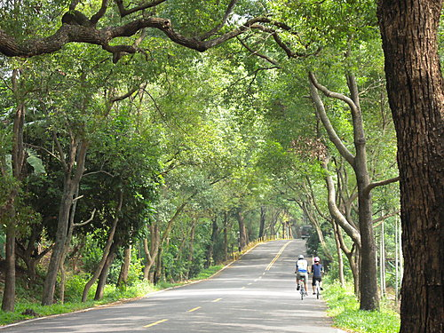
秋日透過樹梢， 伴著和煦秋風，小獅、小超、珠珠
集集綠色隧道ㄍㄚ小摺，就此展開囉！
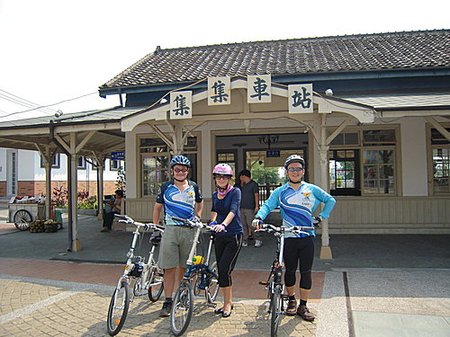
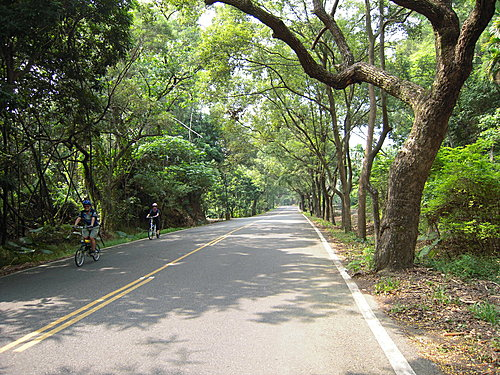
〞偷了浮生半日閒 〞，小摺上的英姿，推滿放鬆自在解脫，唉呀！人生至此，夫復何求，你嘛可以滴啦！
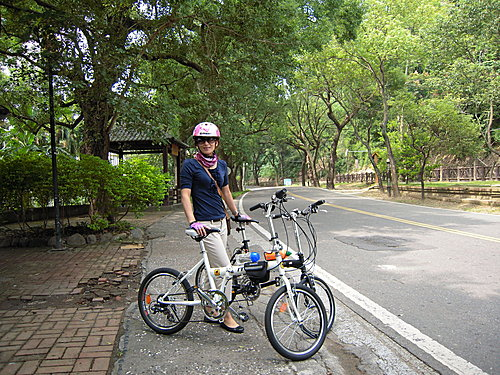
啥？你沒有小摺？
快call小超與小獅Ｙ，
宅便明日就送達！
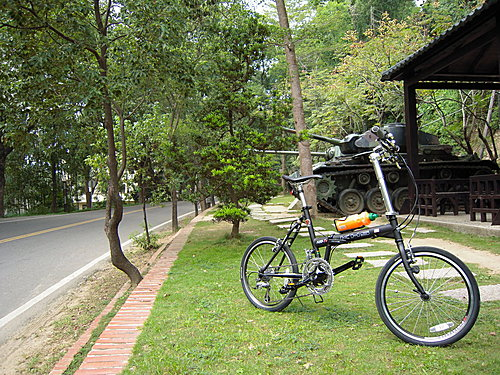
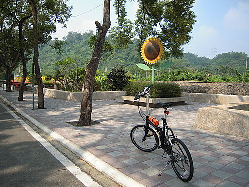
綠意盎然，樟樹夾道枝葉茂密成蔭 ，
知道嗎？這裡可是全省唯一的樟樹綠色隧道哩！
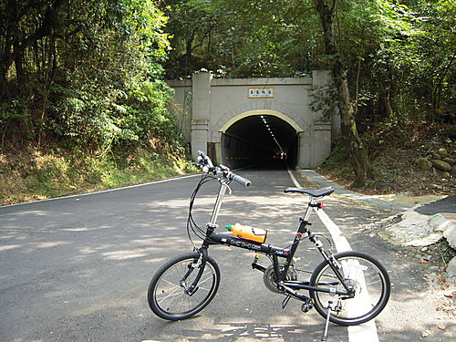
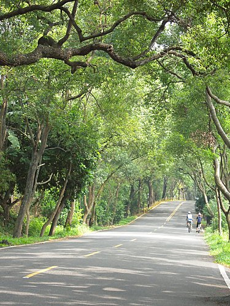
舒爽的大氣，溶和全身脈動，洗條一身疲備，整合生命律動感受大自然給予的溫柔，歡喜暢遊！
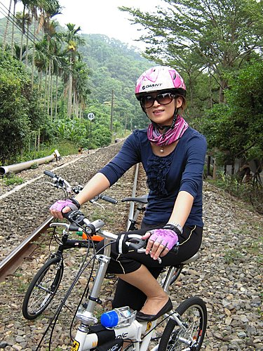
蝶兒、花香、綠葉、配著＆『紅花』
【水哦】㊣
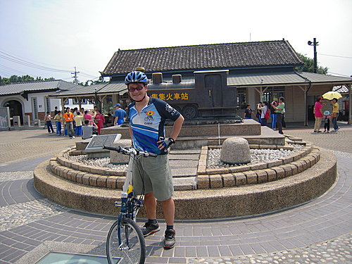
已拋擲沈重工作包袱的小超，臉上推滿＊ｌｏｏｋ！我很帥吧！＊
有啦！有啦！真滴蟀啦！
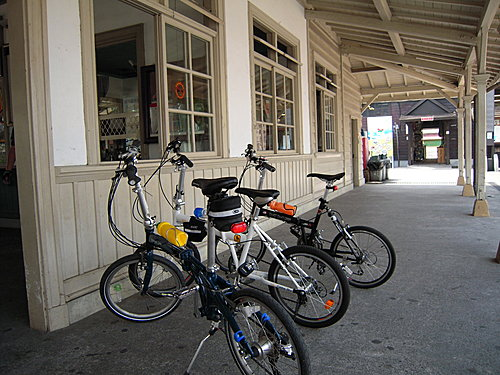
有夠重ㄝㄋㄟ，乘機休息一下吧！
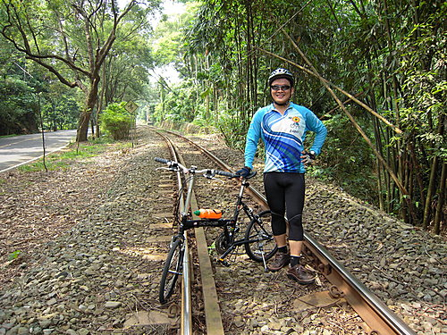
看！已將卷證拋諸腦後的小獅自傲的帶著相機，架著小摺，處處補捉秋日風情哩！ 
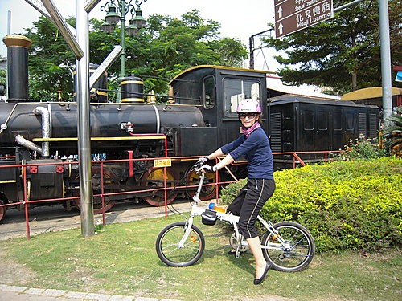
矣！火車火車你要開著去 ．．．．
等等我啦！
綠色隧道旁集集﹋車城線觀光小火車，來了！
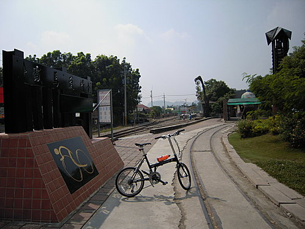
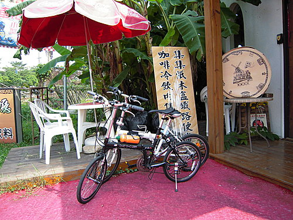
風車咖啡簡餐店
薰衣草雞排餐＋ｃｏＬａ免費暢飲
小鎮閒情，舒適度百分百喔！
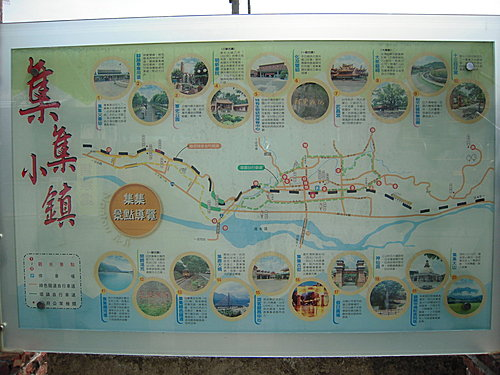
走啦！怕什麼ㄋㄟ，有地圖滴啦！
河東獅 於 2009-11-24 18:34:30 回應
鐵道、綠林、閒情的小鎮風情， 真是超優的大眾化行程， 透過珠珠文情並茂的介紹， 智者， 豈能不動心？ 不去，你一定會後悔喲............... 小獅